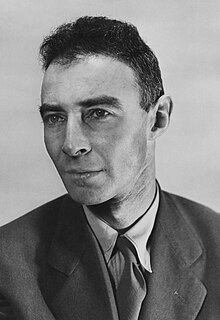
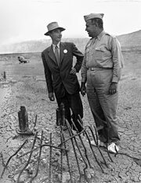
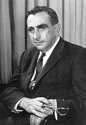
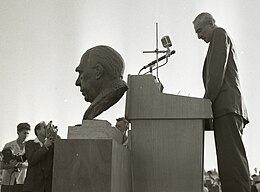
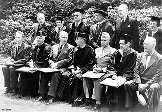

J. Robert Oppenheimer
Summary

J. Robert Oppenheimer (born Julius Robert Oppenheimer; /ˈɒpənhaɪmər/ OP-ən-hy-mər; April 22, 1904 – February 18, 1967) was an American theoretical physicist and director of the Manhattan Project's Los Alamos Laboratory during World War II. He is often called the "father of the atomic bomb". Born in New York City, Oppenheimer earned a bachelor of arts degree in chemistry from Harvard University in 1925 and a doctorate in physics from the University of Göttingen in Germany in 1927, where he studied under Max Born. After research at other institutions, he joined the physics department at the University of California, Berkeley, where he became a full professor in 1936. He made significant contributions to theoretical physics, including achievements in quantum mechanics and nuclear physics such as the Born–Oppenheimer approximation for molecular wave functions, work on the theory of electrons and positrons, the Oppenheimer–Phillips process in nuclear fusion, and early work on quantum tunneling. With his students, he also made contributions to the theory of neutron stars and black holes, quantum field theory, and the interactions of cosmic rays. In 1942, Oppenheimer was recruited to work on the Manhattan Project, and in 1943 he was appointed director of the project's Los Alamos Laboratory in New Mexico, tasked with developing the first nuclear weapons. His leadership and scientific expertise were instrumental in the project's success. On July 16, 1945, he was present at the first test of the atomic bomb, Trinity. In August 1945, the weapons were used against Japan in the bombings of Hiroshima and Nagasaki, the only use of nuclear weapons in an armed conflict. In 1947, Oppenheimer became the director of the Institute for Advanced Study in Princeton, New Jersey, and chaired the influential General Advisory Committee of the newly created U.S. Atomic Energy Commission. He lobbied for international control of nuclear power to avert nuclear proliferation and a nuclear arms race with the Soviet Union. He opposed the development of the hydrogen bomb during a 1949–1950 governmental debate on the question and subsequently took positions on defense-related issues that provoked the ire of some U.S. government and military factions. During the second Red Scare, Oppenheimer's stances, together with his past associations with the Communist Party USA, led to the revocation of his security clearance following a 1954 security hearing. This effectively ended his access to the government's atomic secrets and thus his career as a nuclear physicist. Stripped also of his direct political influence, Oppenheimer continued to lecture, write, and work in physics. In 1963, he was awarded the Enrico Fermi Award as a gesture of political rehabilitation. He died four years later of throat cancer. In 2022, the federal government vacated the 1954 revocation of Oppenheimer's security clearance.
Early Life
Childhood and education
Childhood and education Oppenheimer was born Julius Robert Oppenheimer [note 1] into a non-observant Jewish family in New York City on April 22, 1904, to Ella (née Friedman), a painter, and Julius Seligmann Oppenheimer, a successful textile importer.[5][6] Robert had a younger brother, Frank, who also became a physicist.[7] Their father was born in Hanau, then part of the Hesse-Nassau province of the Kingdom of Prussia, and came to the United States as a teenager in 1888 with few resources and no money, higher education, or knowledge of the English language. He was hired by a textile company and within a decade was an executive there, eventually becoming wealthy.[8] In 1912, the family moved to an apartment on Riverside Drive near West 88th Street, Manhattan, an area known for luxurious mansions and townhouses.[6] Their art collection included works by Pablo Picasso, Édouard Vuillard, and Vincent van Gogh.[9] Oppenheimer was initially educated at Alcuin Preparatory School. In 1911, he entered the Ethical Culture Society School,[10] founded by Felix Adler to promote training based on the Ethical Culture movement, whose motto was "Deed before Creed". Oppenheimer's father had been a member of the Society for many years, serving on its board of trustees.[11] Oppenheimer was a versatile student, interested in English and French literature, and particularly mineralogy.[12] He completed third and fourth grades in one year and skipped half of eighth grade.[10] During his final year, Oppenheimer became interested in chemistry.[13] He graduated in 1921, but his further education was delayed a year by an attack of colitis contracted while prospecting in Joachimstal during a family vacation in Czechoslovakia. He recovered in New Mexico, where he developed a love for horseback riding and the southwestern United States.[14] Oppenheimer entered Harvard College in 1922 at age 18. He majored in chemistry; Harvard also required studies in history, literature, and philosophy or mathematics. To compensate for the delay caused by his illness, he took six courses each term instead of the usual four. He was admitted to the undergraduate honor society Phi Beta Kappa and was granted graduate standing in physics on the basis of independent study, which meant he could bypass basic courses in favor of advanced ones. He was attracted to experimental physics by a course on thermodynamics taught by Percy Bridgman. Oppenheimer graduated from Harvard in 1925 with a Bachelor of Arts, summa cum laude, after only three years of study.[15]
Studies in Europe
After being accepted at Christ's College, Cambridge in 1924, Oppenheimer wrote to Ernest Rutherford requesting permission to work at the Cavendish Laboratory, though Bridgman's letter of recommendation said that Oppenheimer's clumsiness in the laboratory suggested that theoretical, rather than experimental, physics would be his forte. Rutherford was unimpressed, but Oppenheimer went to Cambridge nonetheless;[16] J. J. Thomson ultimately accepted him on the condition that he complete a basic laboratory course.[17] Oppenheimer was very unhappy at Cambridge and wrote to a friend: "I am having a pretty bad time. The lab work is a terrible bore, and I am so bad at it that it is impossible to feel that I am learning anything".[18] He developed an antagonistic relationship with his tutor, Patrick Blackett, a future Nobel laureate. According to Oppenheimer's friend Francis Fergusson, Oppenheimer once confessed to leaving an apple injected with poison on Blackett's desk; no one ate it. Oppenheimer's parents convinced the university authorities not to press criminal charges or expel him. Instead Oppenheimer was placed on probation and had to have regular sessions with a psychiatrist in Harley Street, London.[19][20][21] Oppenheimer was a tall, thin chain smoker,[22] who often neglected to eat during periods of intense concentration. Many friends said he could be self-destructive. Fergusson once tried to distract Oppenheimer from his apparent depression by telling him that he (Fergusson) was to marry his girlfriend; Oppenheimer jumped on Fergusson and tried to strangle him. Oppenheimer was plagued by periods of depression throughout his life,[23][24] and once told his brother, "I need physics more than friends".[25] In 1926, Oppenheimer left Cambridge for the University of Göttingen to study under Max Born; Göttingen was one of the world's leading centers for theoretical physics. Oppenheimer made friends who went on to great success, including Werner Heisenberg, Pascual Jordan, Wolfgang Pauli, Paul Dirac, Enrico Fermi and Edward Teller. He was enthusiastic in discussion to the point of sometimes taking them over.[26] Maria Goeppert presented Born with a petition signed by herself and others threatening a boycott of the class unless he made Oppenheimer quiet down. Born left it out on his desk where Oppenheimer could read it, and it was effective without a word being said.[27] Oppenheimer obtained his Doctor of Philosophy degree in March 1927 at age 23, supervised by Max Born.[28][29] After the oral exam, James Franck, the professor administering, reportedly said, "I'm glad that's over. He was on the point of questioning me."[30] Oppenheimer published more than a dozen papers while in Europe, including many important contributions to the new field of quantum mechanics. He and Born published a famous paper on the Born–Oppenheimer approximation, which separates nuclear motion from electronic motion in the mathematical treatment of molecules, allowing nuclear motion to be neglected to simplify calculations. It remains his most cited work.[31]
Early Career
Teaching
Oppenheimer was awarded a United States National Research Council fellowship to the California Institute of Technology (Caltech) in September 1927. Bridgman also wanted him at Harvard, so a compromise was reached whereby he split his fellowship for the 1927–28 academic year between Harvard in 1927 and Caltech in 1928.[32] At Caltech, he struck up a close friendship with Linus Pauling; they planned to mount a joint attack on the nature of the chemical bond, a field in which Pauling was a pioneer, with Oppenheimer supplying the mathematics and Pauling interpreting the results. The collaboration, and their friendship, ended after Oppenheimer invited Pauling's wife, Ava Helen Pauling, to join him on a tryst in Mexico.[33] Oppenheimer later invited Pauling to be head of the Chemistry Division of the Manhattan Project, but Pauling refused, saying he was a pacifist.[34] In the autumn of 1928, Oppenheimer visited Paul Ehrenfest's institute at the University of Leiden, the Netherlands, where he impressed by giving lectures in Dutch, despite having little experience with the language. There, he was given the nickname of Opje,[35] later anglicized by his students as "Oppie".[36] From Leiden, he continued on to the Swiss Federal Institute of Technology (ETH) in Zurich to work with Wolfgang Pauli on quantum mechanics and the continuous spectrum. Oppenheimer respected and liked Pauli and may have emulated his personal style as well as his critical approach to problems.[37] On returning to the United States, Oppenheimer accepted an associate professorship from the University of California, Berkeley, where Raymond T. Birge wanted him so badly that he expressed a willingness to share him with Caltech.[34] Before he began his Berkeley professorship, Oppenheimer was diagnosed with a mild case of tuberculosis and spent some weeks with his brother Frank at a New Mexico ranch, which he leased and eventually purchased. When he heard the ranch was available for lease, he exclaimed, "Hot dog!", and he later called it Perro Caliente ("hot dog" in Spanish).[38] Later, he used to say that "physics and desert country" were his "two great loves".[39] He recovered from tuberculosis and returned to Berkeley, where he prospered as an advisor and collaborator to a generation of physicists who admired him for his intellectual virtuosity and broad interests. His students and colleagues saw him as mesmerizing: hypnotic in private interaction, but often frigid in more public settings. His associates fell into two camps: one saw him as an aloof and impressive genius and aesthete, the other as a pretentious and insecure poseur.[40] His students almost always fell into the former category, adopting his walk, speech, and other mannerisms, and even his inclination for reading entire texts in their original languages.[41] Hans Bethe said of him:
Probably the most important ingredient he brought to his teaching was his exquisite taste. He always knew what were the important problems, as shown by his choice of subjects. He truly lived with those problems, struggling for a solution, and he communicated his concern to the group. In its heyday, there were about eight or ten graduate students in his group and about six Post-doctoral Fellows. He met this group once a day in his office and discussed with one after another the status of the student's research problem. He was interested in everything, and in one afternoon they might discuss quantum electrodynamics, cosmic rays, electron pair production and nuclear physics.[42]
Oppenheimer worked closely with Nobel Prize-winning experimental physicist Ernest O. Lawrence and his cyclotron pioneers, helping them understand the data that their machines were producing at Berkeley's Radiation Laboratory, which eventually developed into today's Lawrence Berkeley National Laboratory.[43] In 1936, Berkeley promoted him to full professor at an annual salary of $3,300 (equivalent to $70,000 in 2022). In return, he was asked to curtail his teaching at Caltech, so a compromise was reached whereby Berkeley released him for six weeks each year, enough to teach one term at Caltech.[44]
Scientific Work
Oppenheimer did important research in theoretical astronomy (especially as related to general relativity and nuclear theory), nuclear physics, spectroscopy, and quantum field theory, including its extension into quantum electrodynamics. The formal mathematics of relativistic quantum mechanics also attracted his attention, although he doubted its validity. His work predicted many later finds, including the neutron, meson and neutron star.[45] Initially, his major interest was the theory of the continuous spectrum. His first published paper, in 1926, concerned the quantum theory of molecular band spectra. He developed a method to carry out calculations of its transition probabilities. He calculated the photoelectric effect for hydrogen and X-rays, obtaining the absorption coefficient at the K-edge. His calculations accorded with observations of the X-ray absorption of the Sun, but not helium. Years later, it was realized that the Sun was largely composed of hydrogen and that his calculations were correct.[46][47] Oppenheimer made important contributions to the theory of cosmic ray showers. He also worked on the problem of field electron emission.[48][49] This work contributed to the development of the concept of quantum tunneling.[50] In 1931, he co-wrote a paper, "Relativistic Theory of the Photoelectric Effect", with his student Harvey Hall,[51] in which, based on empirical evidence, he correctly disputed Dirac's assertion that two of the energy levels of the hydrogen atom have the same energy. Subsequently, one of his doctoral students, Willis Lamb, determined that this was a consequence of what became known as the Lamb shift, for which Lamb was awarded the Nobel Prize in physics in 1955.[45] With Melba Phillips, the first graduate student to begin her PhD under Oppenheimer's supervision,[note 2] Oppenheimer worked on calculations of artificial radioactivity under bombardment by deuterons. When Ernest Lawrence and Edwin McMillan bombarded nuclei with deuterons they found the results agreed closely with the predictions of George Gamow, but when higher energies and heavier nuclei were involved, the results did not conform to the theory. In 1935, Oppenheimer and Phillips worked out a theory—subsequently known as the Oppenheimer–Phillips process—to explain the results. This theory is still in use today.[53][note 3] As early as 1930, Oppenheimer wrote a paper that essentially predicted the existence of the positron. This was after a paper by Dirac proposed that electrons could have both a positive charge and negative energy. Dirac's paper introduced an equation, later known as the Dirac equation, that unified quantum mechanics, special relativity and the then-new concept of electron spin, to explain the Zeeman effect.[55] Drawing on the body of experimental evidence, Oppenheimer rejected the idea that the predicted positively charged electrons were protons. He argued that they would have to have the same mass as an electron, whereas experiments showed that protons were much heavier than electrons. Two years later, Carl David Anderson discovered the positron, for which he received the 1936 Nobel Prize in Physics.[56] In the late 1930s, Oppenheimer became interested in astrophysics, most likely through his friendship with Richard Tolman, resulting in a series of papers. In the first of these, "On the Stability of Stellar Neutron Cores" (1938),[57] co-written with Robert Serber, Oppenheimer explored the properties of white dwarfs. This was followed by a paper co-written with one of his students, George Volkoff, "On Massive Neutron Cores",[58] which demonstrated that there was a limit, known as the Tolman–Oppenheimer–Volkoff limit, to the mass of stars beyond which they would not remain stable as neutron stars and would undergo gravitational collapse. In 1939, Oppenheimer and another of his students, Hartland Snyder, produced the paper "On Continued Gravitational Contraction",[59] which predicted the existence of what later became termed black holes. After the Born–Oppenheimer approximation paper, these papers remain his most cited, and were key factors in the rejuvenation of astrophysical research in the United States in the 1950s, mainly by John A. Wheeler.[60] Oppenheimer's papers were considered difficult to understand even by the standards of the abstract topics he was expert in. He was fond of using elegant, if extremely complex, mathematical techniques to demonstrate physical principles, though he was sometimes criticized for making mathematical mistakes, presumably out of haste. "His physics was good", said his student Snyder, "but his arithmetic awful".[45] After World War II, Oppenheimer published only five scientific papers, one of them in biophysics, and none after 1950. Murray Gell-Mann, a later Nobelist who, as a visiting scientist, worked with him at the Institute for Advanced Study in 1951, offered this opinion:
He didn't have Sitzfleisch, "sitting flesh," when you sit on a chair. As far as I know, he never wrote a long paper or did a long calculation, anything of that kind. He didn't have patience for that; his own work consisted of little aperçus, but quite brilliant ones. But he inspired other people to do things, and his influence was fantastic.[61]
Private and Political Life
Politics
During the 1920s, Oppenheimer remained uninformed on worldly matters. He claimed that he did not read newspapers or popular magazines and only learned of the Wall Street crash of 1929 while he was on a walk with Ernest Lawrence six months after the crash occurred.[62][63] He once remarked that he never cast a vote until the 1936 presidential election. From 1934 on, he became increasingly concerned about politics and international affairs. In 1934, he earmarked three percent of his annual salary—about $100 (equivalent to $2,200 in 2022)—for two years to support German physicists fleeing Nazi Germany. During the 1934 West Coast Waterfront Strike, he and some of his students, including Melba Phillips and Bob Serber, attended a longshoremen's rally. Oppenheimer repeatedly attempted to get Serber a position at Berkeley but was blocked by Berkeley Physics Department administrator Raymond T. Birge, who felt that "one Jew in the department was enough".[64] Oppenheimer's mother died in 1931, and he became closer to his father who, although still living in New York, became a frequent visitor in California.[65] When his father died in 1937, leaving $392,602 (equivalent to $8 million in 2022) to be divided between Oppenheimer and his brother Frank, Oppenheimer immediately wrote out a will that left his estate to the University of California to be used for graduate scholarships.[66] Like many young intellectuals in the 1930s, Oppenheimer supported social reforms that were later categorized as communist ideas. He donated to many progressive causes considered left-wing during the McCarthy era. Most of his allegedly radical work consisted of hosting fundraisers for the Republican cause in the Spanish Civil War and other anti-fascist activity. He never openly joined the Communist Party USA (CPUSA), though he did give money to leftist causes by way of acquaintances who were alleged to be members.[67] When he joined the Manhattan Project in 1942, Oppenheimer wrote on his personal security questionnaire that he had been "a member of just about every Communist Front organization on the West Coast".[68] Years later, he claimed that he did not remember saying this, that it was not true, and that if he had said anything along those lines, it was "a half-jocular overstatement".[69] He was a subscriber to the People's World,[70] a Communist Party organ, and he testified in 1954, "I was associated with the communist movement".[71] From 1937 to 1942, Oppenheimer was a member at Berkeley of what he called a "discussion group", which was later identified by fellow members Haakon Chevalier[72][73] and Gordon Griffiths as a "closed" (secret) unit of the Communist Party for Berkeley faculty.[74] The FBI opened a file on Oppenheimer in March 1941. It recorded that he attended a meeting in December 1940 at Chevalier's home that was also attended by the Communist Party's California state secretary, William Schneiderman, and its treasurer, Isaac Folkoff. The FBI noted that Oppenheimer was on the Executive Committee of the American Civil Liberties Union, which it considered a communist front organization. Shortly thereafter, the FBI added Oppenheimer to its Custodial Detention Index, for arrest in case of national emergency.[75] Many of Oppenheimer's closest associates were active in the Communist Party in the 1930s or 1940s, including his brother Frank, Frank's wife Jackie,[76] Kitty,[77] Tatlock, his landlady Mary Ellen Washburn,[78] and several of his graduate students at Berkeley.[79] Whether Oppenheimer was a party member has been debated. Almost all historians agree he had strong left-wing views during this time and interacted with party members, but it is disputed whether he was an official member. At his 1954 security clearance hearings, he denied being a member of the Communist Party but identified himself as a fellow traveler, which he defined as someone who agrees with many of communism's goals but is not willing to blindly follow orders from any Communist Party apparatus.[80]
Relationships and Children
In 1936, Oppenheimer became involved with Jean Tatlock, the daughter of a Berkeley literature professor and a student at Stanford University School of Medicine. The two had similar political views; she wrote for the Western Worker, a Communist Party newspaper.[81] In 1939, after a tempestuous relationship, Tatlock broke up with Oppenheimer. In August of that year, he met Katherine ("Kitty") Puening, a radical Berkeley student and former Communist Party member. Kitty's first marriage had lasted only a few months. Her second, common-law husband was Joe Dallet, an active member of the Communist Party killed in the Spanish Civil War.[82] Kitty returned from Europe to the U.S., where she obtained a Bachelor of Arts degree in botany from the University of Pennsylvania. In 1938 she married Richard Harrison, a physician and medical researcher, and in June 1939 moved with him to Pasadena, California, where he became chief of radiology at a local hospital and she enrolled as a graduate student at the University of California, Los Angeles. She and Oppenheimer created a minor scandal by sleeping together after one of Tolman's parties, and in the summer of 1940 she stayed with Oppenheimer at his ranch in New Mexico. When it was discovered she was pregnant, Kitty asked Harrison for a divorce, to which he acceded. On November 1, 1940, she obtained a quick divorce in Reno, Nevada, and married Oppenheimer.[83][84] Their first child, Peter, was born in May 1941, and their second, Katherine ("Toni"), was born in Los Alamos, New Mexico, on December 7, 1944.[85] During his marriage, Oppenheimer rekindled his affair with Tatlock.[86] Later, their continued contact became an issue in his security clearance hearings because of Tatlock's communist associations.[87] Throughout the development of the atomic bomb, Oppenheimer was under investigation by both the FBI and the Manhattan Project's internal security arm for his past left-wing associations. He was followed by Army security agents during a trip to California in June 1943 to visit Tatlock, who was suffering from depression. Oppenheimer spent the night in her apartment.[88] Tatlock killed herself on January 4, 1944, leaving Oppenheimer deeply grieved.[89] At Los Alamos, Oppenheimer began an emotional affair with Ruth Tolman, a psychologist and the wife of his friend Richard Tolman. The affair ended after Oppenheimer returned east to become director of the Institute for Advanced Study but, after Richard's death in August 1948, they reconnected and saw each other occasionally until Ruth's death in 1957. Few of their letters survive, but those that do reflect a close and affectionate relationship, with Oppenheimer calling her "My Love".[90][91]
Mysticism
Oppenheimer's diverse interests sometimes interrupted his focus on science. He liked things that were difficult and since much of the scientific work appeared easy for him, he developed an interest in the mystical and the cryptic.[93] After leaving Harvard, he began to acquaint himself with the classical Hindu texts through their English translations.[94] He also had an interest in learning languages and learned Sanskrit,[note 4] under Arthur W. Ryder at Berkeley in 1933.[96][97] He eventually read literary works such as the Bhagavad Gita and Meghaduta in the original Sanskrit, and deeply pondered them. He later cited the Gita as one of the books that most shaped his philosophy of life.[98][99] He wrote to his brother that the Gita was "very easy and quite marvelous", and called it "the most beautiful philosophical song existing in any known tongue".[97] He later gave copies of it as presents to his friends and kept a personal, worn-out copy on the bookshelf by his desk.[97] He nicknamed his car Garuda, the mount bird of the Hindu god Vishnu.[100] Oppenheimer never became a Hindu in the traditional sense; he did not join any temple nor pray to any god.[101][102] He "was really taken by the charm and the general wisdom of the Bhagavad-Gita", his brother said.[101] It is speculated that Oppenheimer's interest in Hindu thought started during his earlier association with Niels Bohr.[103] Both Bohr and Oppenheimer had been very analytical and critical about the ancient Hindu mythological stories and the metaphysics embedded in them.[103] In one conversation with David Hawkins before the war, while talking about the literature of ancient Greece, Oppenheimer remarked, "I have read the Greeks; I find the Hindus deeper."[103] His close confidant and colleague Isidor Rabi, who had seen Oppenheimer throughout his Berkeley, Los Alamos, and Princeton years, wondering "why men of Oppenheimer's gifts do not discover everything worth discovering",[104] reflected that:
Oppenheimer was overeducated in those fields which lie outside the scientific tradition, such as his interest in religion, in the Hindu religion in particular, which resulted in a feeling for the mystery of the universe that surrounded him almost like a fog. He saw physics clearly, looking toward what had already been done, but at the border he tended to feel there was much more of the mysterious and novel than there actually was ... [he turned] away from the hard, crude methods of theoretical physics into a mystical realm of broad intuition.... In Oppenheimer the element of earthiness was feeble. Yet it was essentially this spiritual quality, this refinement as expressed in speech and manner, that was the basis of his charisma. He never expressed himself completely. He always left a feeling that there were depths of sensibility and insight not yet revealed. These may be the qualities of the born leader who seems to have reserves of uncommitted strength.[105]
In spite of this, observers such as physicist Luis Alvarez have suggested that if Oppenheimer had lived long enough to see his predictions substantiated by experiment, he might have won a Nobel Prize for his work on gravitational collapse, concerning neutron stars and black holes.[106][107] In retrospect, some physicists and historians consider this his most important contribution, though it was not taken up by other scientists in his lifetime.[108] The physicist and historian Abraham Pais once asked Oppenheimer what he considered his most important scientific contributions; Oppenheimer cited his work on electrons and positrons, not his work on gravitational contraction.[109] Oppenheimer was nominated for the Nobel Prize for physics three times, in 1946, 1951 and 1967, but never won.[110][111]
Manhattan Project
Los Alamos
On October 9, 1941, two months before the United States entered World War II, President Franklin D. Roosevelt approved a crash program to develop an atomic bomb. Lawrence brought Oppenheimer into the project on October 21. On May 18, 1942, [112] National Defense Research Committee Chairman James B. Conant, who had been one of Oppenheimer's lecturers at Harvard, asked Oppenheimer to take over work on fast neutron calculations, a task Oppenheimer threw himself into with full vigor. He was given the title "Coordinator of Rapid Rupture", which specifically referred to the propagation of a fast neutron chain reaction in an atomic bomb. One of his first acts was to host a summer school for bomb theory in Berkeley. The mix of European physicists and his own students—a group including Robert Serber, Emil Konopinski, Felix Bloch, Hans Bethe and Edward Teller—kept themselves busy by calculating what needed to be done, and in what order, to make the bomb.[113][114] Mug shot with "K-6" over it. In June 1942, the U.S. Army established the Manhattan Engineer District to handle its part in the atom bomb project, beginning the process of transferring responsibility from the Office of Scientific Research and Development to the military.[115] In September, Brigadier General Leslie R. Groves Jr., was appointed director of what became known as the Manhattan Project.[116] By October 12, 1942, Groves and Oppenheimer had decided that for security and cohesion, they needed to establish a centralized, secret research laboratory in a remote location.[117] Groves selected Oppenheimer to head the project's secret weapons laboratory, although it is not known precisely when.[118] This decision surprised many, because Oppenheimer had left-wing political views and no record as a leader of large projects. Groves worried that because Oppenheimer did not have a Nobel Prize, he might not have had the prestige to direct fellow scientists,[119] but Groves was impressed by Oppenheimer's singular grasp of the practical aspects of the project and by the breadth of his knowledge. As a military engineer, Groves knew that this would be vital in an interdisciplinary project that would involve not just physics but also chemistry, metallurgy, ordnance, and engineering. Groves also detected in Oppenheimer something that many others did not, an "overweening ambition",[120] which Groves reckoned would supply the drive necessary to push the project to a successful conclusion.[120] Oppenheimer's past associations were not overlooked, but on July 20, 1943, Groves directed that he receive a security clearance "without delay irrespective of the information which you have concerning Mr Oppenheimer. He is absolutely essential to the project."[121] Rabi considered Oppenheimer's appointment "a real stroke of genius on the part of General Groves, who was not generally considered to be a genius".[122] Oppenheimer favored a location for the laboratory in New Mexico, not far from his ranch. On November 16, 1942, he, Groves and others toured a prospective site. Oppenheimer feared that the high cliffs surrounding it would feel claustrophobic, and there was concern about possible flooding. He then suggested a site he knew well: a flat mesa near Santa Fe, New Mexico, which was the site of a private boys' school, the Los Alamos Ranch School. The engineers were concerned about the poor access road and the water supply but otherwise felt that it was ideal.[123] The Los Alamos Laboratory was built on the site of the school, taking over some of its buildings, while many new buildings were erected in great haste. At the laboratory, Oppenheimer assembled a group of the top physicists of the time, whom he called the "luminaries".[124] Los Alamos was initially supposed to be a military laboratory, and Oppenheimer and other researchers were to be commissioned into the Army. He went so far as to order himself a lieutenant colonel's uniform and take the Army physical test, which he failed. Army doctors considered him underweight at 128 pounds (58 kg), diagnosed his chronic cough as tuberculosis, and were concerned about his chronic lumbosacral joint pain.[125] The plan to commission scientists fell through when Rabi and Robert Bacher balked at the idea. Conant, Groves, and Oppenheimer devised a compromise whereby the University of California operated the laboratory under contract to the War Department.[126] It soon turned out that Oppenheimer had hugely underestimated the magnitude of the project: Los Alamos grew from a few hundred people in 1943 to over 6,000 in 1945.[125] Oppenheimer at first had difficulty with the organizational division of large groups but rapidly learned the art of large-scale administration after he took up permanent residence at Los Alamos. He was noted for his mastery of all scientific aspects of the project and for his efforts to control the inevitable cultural conflicts between scientists and the military. Victor Weisskopf wrote:
Oppenheimer directed these studies, theoretical and experimental, in the real sense of the words. Here his uncanny speed in grasping the main points of any subject was a decisive factor; he could acquaint himself with the essential details of every part of the work. He did not direct from the head office. He was intellectually and physically present at each decisive step. He was present in the laboratory or in the seminar rooms, when a new effect was measured, when a new idea was conceived. It was not that he contributed so many ideas or suggestions; he did so sometimes, but his main influence came from something else. It was his continuous and intense presence, which produced a sense of direct participation in all of us; it created that unique atmosphere of enthusiasm and challenge that pervaded the place throughout its time.[127]
Bomb Design
At this point in the war, there was considerable anxiety among the scientists that the German nuclear weapons program might be progressing faster than the Manhattan Project.[128][129] In a letter dated May 25, 1943, Oppenheimer responded to a proposal by Fermi to use radioactive materials to poison German food supplies. Oppenheimer asked Fermi whether he could produce enough strontium without letting too many in on the secret. Oppenheimer continued, "I think we should not attempt a plan unless we can poison food sufficient to kill a half a million men".[130] In 1943, development efforts were directed to a plutonium gun-type fission weapon called "Thin Man". Initial research on the properties of plutonium was done using cyclotron-generated plutonium-239, which was extremely pure but could be created only in tiny amounts. When Los Alamos received the first sample of plutonium from the X-10 Graphite Reactor in April 1944, a problem was discovered: reactor-bred plutonium had a higher concentration of plutonium-240, making it unsuitable for use in a gun-type weapon.[131] In July 1944, Oppenheimer abandoned the gun design in favor of an implosion-type weapon. Using chemical explosive lenses, a sub-critical sphere of fissile material could be squeezed into a smaller and denser form. The metal needed to travel only very short distances, so the critical mass would be assembled in much less time.[132] In August 1944, Oppenheimer implemented a sweeping reorganization of the Los Alamos laboratory to focus on implosion.[133] He concentrated the development efforts on the gun-type device, a simpler design that only had to work with uranium-235, in a single group. This device became Little Boy in February 1945.[134] After a mammoth research effort, the more complex design of the implosion device, known as the "Christy gadget" after Robert Christy, another student of Oppenheimer's,[135] was finalized in a meeting in Oppenheimer's office on February 28, 1945.[136] In May 1945, an Interim Committee was created to advise and report on wartime and postwar policies regarding the use of nuclear energy. The Interim Committee established a scientific panel consisting of Oppenheimer, Arthur Compton, Fermi, and Lawrence to advise it on scientific issues. In its presentation to the Interim Committee, the panel offered its opinion not just on an atomic bomb's likely physical effects but also on its likely military and political impact.[137] This included opinions on such sensitive issues as whether the Soviet Union should be advised of the weapon in advance of its use against Japan.[138]
Trinity
In the early morning hours of July 16, 1945, near Alamogordo, New Mexico, the work at Los Alamos culminated in the test of the world's first nuclear weapon. Oppenheimer had code-named the site "Trinity" in mid-1944, saying later that the name came from John Donne's Holy Sonnets; he had been introduced to Donne's work in the 1930s by Jean Tatlock, who killed herself in January 1944.[140][141] Brigadier General Thomas Farrell, who was present in the control bunker with Oppenheimer, recalled:
Dr. Oppenheimer, on whom had rested a very heavy burden, grew tenser as the last seconds ticked off. He scarcely breathed. He held on to a post to steady himself. For the last few seconds, he stared directly ahead and then when the announcer shouted "Now!" and there came this tremendous burst of light followed shortly thereafter by the deep growling roar of the explosion, his face relaxed into an expression of tremendous relief.[142]
Oppenheimer's brother Frank recalled Oppenheimer's first words as, "I guess it worked".[143][144] Two men, one in a suit and hat and the other in military uniform, stand in front of twisted metal whilst wearing white overshoes According to a 1949 magazine profile, while witnessing the explosion Oppenheimer thought of verses from the Bhagavad Gita: "If the radiance of a thousand suns were to burst at once into the sky, that would be like the splendor of the mighty one ... Now I am become Death, the shatterer of worlds."[146] In 1965 he recalled the moment this way:
We knew the world would not be the same. A few people laughed, a few people cried. Most people were silent. I remembered the line from the Hindu scripture, the Bhagavad Gita; Vishnu is trying to persuade the Prince that he should do his duty and, to impress him, takes on his multi-armed form and says, "Now I am become Death, the destroyer of worlds." I suppose we all thought that, one way or another.[147][note 5]
Rabi described seeing Oppenheimer somewhat later: "I'll never forget his walk ... like High Noon ... this kind of strut. He had done it".[154] Despite many scientists' opposition to using the bomb on Japan, Compton, Fermi, and Oppenheimer believed that a test explosion would not convince Japan to surrender.[155] At an August 6 assembly at Los Alamos, the evening of the atomic bombing of Hiroshima, Oppenheimer took to the stage and clasped his hands together "like a prize-winning boxer" while the crowd cheered. He expressed regret that the weapon was ready too late for use against Nazi Germany.[156] On August 17, however, Oppenheimer traveled to Washington to hand-deliver a letter to Secretary of War Henry L. Stimson expressing his revulsion and his wish to see nuclear weapons banned.[157] In October he met with President Harry S. Truman, who dismissed Oppenheimer's concern about an arms race with the Soviet Union and belief that atomic energy should be under international control. Truman became infuriated when Oppenheimer said, "Mr. President, I feel I have blood on my hands", responding that he (Truman) bore sole responsibility for the decision to use atomic weapons against Japan, and later said, "I don't want to see that son of a bitch in this office ever again".[158][159] For his services as director of Los Alamos, Oppenheimer was awarded the Medal for Merit by Truman in 1946.[160]
Postwar activites
Once the public learned of the Manhattan Project after the bombings of Hiroshima and Nagasaki, Oppenheimer—suddenly a household name as the "father of the atomic bomb"—became a national spokesman for science, emblematic of a new type of technocratic power;[89][161][162] he appeared on the covers of Life and Time.[163][164] Nuclear physics became a powerful force as nations realized the strategic and political power that atomic weapons conferred. Like many scientists of his generation, Oppenheimer felt that security from atomic bombs could come only from a transnational organization such as the newly formed United Nations, which could institute a program to stifle a nuclear arms race.[165]
Institute for Advanced Study
In November 1945, Oppenheimer left Los Alamos to return to Caltech,[166] but soon found that his heart was no longer in teaching.[167] In 1947, he accepted an offer from Lewis Strauss to take up the directorship of the Institute for Advanced Study in Princeton, New Jersey. This meant moving back east and leaving Ruth Tolman, the wife of his friend Richard Tolman, with whom he had begun an affair after leaving Los Alamos.[168] The job came with a salary of $20,000 per annum, plus rent-free accommodation in the director's house, a 17th-century manor with a cook and groundskeeper, surrounded by 265 acres (107 ha) of woodlands.[169] He collected European furniture, and French post-impressionist and Fauvist artworks. His art collection included works by Cézanne, Derain, Despiau, de Vlaminck, Picasso, Rembrandt, Renoir, Van Gogh and Vuillard.[170] Oppenheimer brought together intellectuals at the height of their powers and from a variety of disciplines to answer the most pertinent questions of the age. He directed and encouraged the research of many well-known scientists, including Freeman Dyson, and the duo of Chen Ning Yang and Tsung-Dao Lee, who won a Nobel Prize for their discovery of parity non-conservation. He also instituted temporary memberships for scholars from the humanities, such as T. S. Eliot and George F. Kennan. Some of these activities were resented by a few members of the mathematics faculty, who wanted the institute to stay a bastion of pure scientific research. Abraham Pais said that Oppenheimer himself thought that one of his failures at the institute was being unable to bring together scholars from the natural sciences and the humanities.[171] During a series of conferences in New York from 1947 through 1949, physicists transitioned from war work back to theoretical issues. Under Oppenheimer's direction, physicists tackled the greatest outstanding problem of the pre-war years: infinite, divergent, and seemingly nonsensical expressions in the quantum electrodynamics of elementary particles. Julian Schwinger, Richard Feynman and Shin'ichiro Tomonaga tackled the problem of regularization, and developed techniques that became known as renormalization. Freeman Dyson was able to prove that their procedures gave similar results. The problem of meson absorption and Hideki Yukawa's theory of mesons as the carrier particles of the strong nuclear force were also tackled. Probing questions from Oppenheimer prompted Robert Marshak's innovative two-meson hypothesis: that there are actually two types of mesons, pions and muons. This led to Cecil Frank Powell's breakthrough and subsequent Nobel Prize for the discovery of the pion.[172][note 6] Oppenheimer served as director of the institute until 1966, when he gave up the position due to his failing health.[174] As of 2023, he is the longest-serving director of the institute.[175]
Atomic Energy Commission
As a member of the Board of Consultants to a committee appointed by Truman, Oppenheimer strongly influenced the 1946 Acheson–Lilienthal Report. In this report, the committee advocated the creation of an international Atomic Development Authority, which would own all fissionable material and the means of its production, such as mines and laboratories, and atomic power plants where it could be used for peaceful energy production. Bernard Baruch was appointed to translate this report into a proposal to the United Nations, resulting in the Baruch Plan of 1946. The Baruch Plan introduced many additional provisions regarding enforcement, in particular requiring inspection of the Soviet Union's uranium resources. It was seen as an attempt to maintain the United States' nuclear monopoly and rejected by the Soviets. With this, it became clear to Oppenheimer that an arms race was unavoidable, due to the mutual suspicion of the United States and the Soviet Union,[176] which even Oppenheimer was starting to distrust.[177] After the Atomic Energy Commission (AEC) came into being in 1947 as a civilian agency in control of nuclear research and weapons issues, Oppenheimer was appointed as the chairman of its General Advisory Committee (GAC). From this position, he advised on a number of nuclear-related issues, including project funding, laboratory construction and even international policy—though the GAC's advice was not always heeded.[178] As chairman of the GAC, Oppenheimer lobbied vigorously for international arms control and funding for basic science, and attempted to influence policy away from a heated arms race.[179] The first atomic bomb test by the Soviet Union in August 1949 came earlier than Americans expected, and over the next several months, there was an intense debate within the U.S. government, military, and scientific communities over whether to proceed with the development of the far more powerful, nuclear fusion-based hydrogen bomb, then known as "the Super".[180] Oppenheimer had been aware of the possibility of a thermonuclear weapon since the days of the Manhattan Project and had allocated a limited amount of theoretical research work toward the possibility at the time, but nothing more than that, given the pressing need to develop a fission weapon.[181] Immediately following the end of the war, Oppenheimer argued against continuing work on the Super at that time, due to both lack of need and the enormous human casualties that would result from its use.[182][183] Now in October 1949, Oppenheimer and the GAC recommended against the development of the Super.[184] He and the other GAC members were motivated partly by ethical concerns, feeling that such a weapon could only be strategically used, resulting in millions of deaths: "Its use therefore carries much further than the atomic bomb itself the policy of exterminating civilian populations".[185] They also had practical qualms, as there was no workable design for a hydrogen bomb at the time.[186] Regarding the possibility of the Soviet Union developing a thermonuclear weapon, the GAC felt that the United States could have an adequate stockpile of atomic weapons to retaliate against any thermonuclear attack.[187] In that connection, Oppenheimer and the others were concerned about the opportunity costs that would be incurred if nuclear reactors were diverted from materials needed for atom bomb production to the materials such as tritium needed for a thermonuclear weapon.[188][189] A majority of the AEC subsequently endorsed the GAC recommendation, and Oppenheimer thought that the fight against the Super would triumph, but proponents of the weapon lobbied the White House vigorously.[190] On January 31, 1950, Truman, who was predisposed to proceed with the development of the weapon anyway, made the formal decision to do so.[191] Oppenheimer and other GAC opponents of the project, especially James Conant, felt disheartened and considered resigning from the committee.[192] They stayed on, though their views on the hydrogen bomb were well known.[193] In 1951, Edward Teller and mathematician Stanislaw Ulam developed the Teller-Ulam design for a hydrogen bomb.[194] This new design seemed technically feasible and Oppenheimer officially acceded to the weapon's development,[195] while still looking for ways in which its testing or deployment or use could be questioned.[196] As he later recalled:
The program we had in 1949 was a tortured thing that you could well argue did not make a great deal of technical sense. It was therefore possible to argue also that you did not want it even if you could have it. The program in 1951 was technically so sweet that you could not argue about that. The issues became purely the military, the political and the humane problem of what you were going to do about it once you had it.[197]
Oppenheimer, Conant, and Lee DuBridge, another member who had opposed the H-bomb decision, left the GAC when their terms expired in August 1952.[198] Truman had declined to reappoint them, as he wanted new voices on the committee who were more in support of H-bomb development.[199] In addition, various opponents of Oppenheimer had communicated to Truman their desire that Oppenheimer leave the committee.[200]
Panels and study groups
Oppenheimer played a role on a number of government panels and study projects during the late 1940s and early 1950s, some of which thrust him into controversies and power struggles.[201] In 1948, Oppenheimer chaired the Department of Defense's Long-Range Objectives Panel, which looked at the military utility of nuclear weapons including how they might be delivered.[202] After a year's worth of study, in spring 1952, Oppenheimer wrote the draft report of Project GABRIEL, which examined the dangers of nuclear fallout.[203] Oppenheimer was also a member of the Science Advisory Committee of the Office of Defense Mobilization.[204] Oppenheimer participated in Project Charles during 1951, which examined the possibility of creating an effective air defense of the United States against atomic attack, and in the follow-on Project East River in 1952, which, with Oppenheimer's input, recommended building a warning system that would provide one-hour notice of an impending atomic attack against American cities.[203] Those two projects led to Project Lincoln in 1952, a large effort on which Oppenheimer was one of the senior scientists.[203] Undertaken at the MIT Lincoln Laboratory, which had recently been founded to study issues of air defense, this in turn led to the Lincoln Summer Study Group, in which Oppenheimer became a key figure.[205] Oppenheimer's and other scientists' urging that resources be allocated to air defense in preference to large retaliatory strike capabilities brought an immediate response of objection from the United States Air Force (USAF),[206] and debate ensued about whether Oppenheimer and allied scientists, or the Air Force, was embracing an inflexible "Maginot Line" philosophy.[207] In any case, the Summer Study Group's work eventually led to the building of the Distant Early Warning Line.[208] Teller, who had been so uninterested in work on the atomic bomb at Los Alamos during the war that Oppenheimer had given him time instead to work on his own project of the hydrogen bomb,[209] left Los Alamos in 1951 to help found, in 1952, a second laboratory at what would become the Lawrence Livermore National Laboratory.[210] Oppenheimer had defended the history of work done at Los Alamos and opposed the creation of the second laboratory.[211] Project Vista looked at improving U.S. tactical warfare capabilities.[203] Oppenheimer was a late addition to the project in 1951 but wrote a key chapter of the report that challenged the doctrine of strategic bombardment and advocated smaller tactical nuclear weapons which would be more useful in a limited theater conflict against enemy forces.[212] Strategic thermonuclear weapons delivered by long-range jet bombers would necessarily be under the control of the U.S. Air Force, whereas the Vista conclusions recommended an increased role for the U.S. Army and U.S. Navy as well.[213] The Air Force reaction to this was immediately hostile,[214] and it succeeded in getting the Vista report suppressed.[215] During 1952, Oppenheimer chaired the five-member State Department Panel of Consultants on Disarmament,[216] which first urged that the United States postpone its planned first test of the hydrogen bomb and seek a thermonuclear test ban with the Soviet Union, on the grounds that avoiding a test might forestall the development of a catastrophic new weapon and open the way for new arms agreements between the two nations.[217] But the panel lacked political allies in Washington, and the Ivy Mike shot went ahead as scheduled.[216] The panel then issued a final report in January 1953, which, influenced by many of Oppenheimer's deeply felt beliefs, presented a pessimistic vision of the future in which neither the United States nor the Soviet Union could establish effective nuclear superiority but both sides could inflict terrible damage on the other.[218] One of the panel's recommendations, which Oppenheimer felt was especially important,[219] was that the U.S. government practice less secrecy and more openness toward the American people about the realities of the nuclear balance and the dangers of nuclear warfare.[218] This notion found a receptive audience in the new Eisenhower administration and led to the creation of Operation Candor.[220] Oppenheimer subsequently presented his view on the lack of utility of ever-larger nuclear arsenals to the American public in a June 1953 article in Foreign Affairs,[221][222] and it received attention in major American newspapers.[223] Thus by 1953, Oppenheimer had reached another peak of influence, being involved in multiple different government posts and projects and having access to crucial strategic plans and force levels.[109] But at the same time, he had become the enemy of the proponents of strategic bombardment, who viewed his opposition to the H-bomb, followed by these accumulated positions and stances, with a combination of bitterness and distrust.[224] This view was paired with their fear that Oppenheimer's fame and powers of persuasion had made him dangerously influential in government, military, and scientific circles.[225]
Security hearing
The FBI under J. Edgar Hoover had been following Oppenheimer since before the war, when he showed Communist sympathies as a professor at Berkeley and had been close to members of the Communist Party, including his wife and brother. They strongly suspected that he himself was a member of the party, based on wiretaps in which party members referred to him or appeared to refer to him as a communist, as well as reports from informers within the party.[226] He had been under close surveillance since the early 1940s, his home and office bugged, his phone tapped and his mail opened.[227] In August 1943, Oppenheimer told Manhattan Project security agents that George Eltenton, whom he did not know, had solicited three men at Los Alamos for nuclear secrets on behalf of the Soviet Union. When pressed on the issue in later interviews, Oppenheimer admitted that the only person who had approached him was his friend Haakon Chevalier, a Berkeley professor of French literature, who had mentioned the matter privately at a dinner at Oppenheimer's house.[228] The FBI furnished Oppenheimer's political enemies with evidence that intimated communist ties. These enemies included Strauss, an AEC commissioner who had long harbored resentment against Oppenheimer both for his activity in opposing the hydrogen bomb and for his humiliation of Strauss before Congress some years earlier. Strauss had expressed opposition to exporting radioactive isotopes to other nations, and Oppenheimer had called them "less important than electronic devices but more important than, let us say, vitamins".[229] On June 7, 1949, Oppenheimer testified before the House Un-American Activities Committee that he had associations with the Communist Party USA in the 1930s.[230] He testified that some of his students, including David Bohm, Giovanni Rossi Lomanitz, Philip Morrison, Bernard Peters, and Joseph Weinberg had been communists at the time they had worked with him at Berkeley. Frank Oppenheimer and his wife Jackie testified before HUAC that they had been members of the Communist Party USA. Frank was subsequently fired from his University of Minnesota position. Unable to find work in physics for many years, he became a cattle rancher in Colorado. He later taught high school physics and was the founder of the San Francisco Exploratorium.[79][231] The triggering event for the security hearing happened on November 7, 1953,[232] when William Liscum Borden, who until earlier in the year had been the executive director of the United States Congress Joint Committee on Atomic Energy, sent Hoover a letter saying that "more probably than not J. Robert Oppenheimer is an agent of the Soviet Union".[233] Eisenhower never exactly believed the allegations in the letter but felt compelled to move forward with an investigation,[234] and on December 3, he ordered that a "blank wall" be placed between Oppenheimer and any government or military secrets.[235] On December 21, 1953, Strauss told Oppenheimer that his security clearance had been suspended, pending resolution of a series of charges outlined in a letter, and discussed his resigning by way of requesting termination of his consulting contract with the AEC.[236] Oppenheimer chose not to resign and requested a hearing instead.[237] The charges were outlined in a letter from Kenneth D. Nichols, general manager of the AEC.[238][239] Nichols wrote that he was "not happy with the inclusion of a reference concerning Oppenheimer's opposition to the hydrogen bomb development".[240] He considered that "in spite of his record he is loyal to the United States".[241] The hearing that followed in April–May 1954, which was held in secret, focused on Oppenheimer's past communist ties and his association during the Manhattan Project with suspected disloyal or communist scientists.[242] It then continued with an examination of Oppenheimer's opposition to the H-bomb and stances in subsequent projects and study groups.[243] A transcript of the hearings was published in June 1954,[244] with some redactions. In 2014, the U.S. Department of Energy made the full transcript public.[245][246] Teller testified that he considered Oppenheimer loyal to the U.S. government, but that:
In a great number of cases, I have seen Dr. Oppenheimer act—I understand that Dr. Oppenheimer acted—in a way which for me was exceedingly hard to understand. I thoroughly disagreed with him in numerous issues and his actions frankly appeared to me confused and complicated. To this extent I feel that I would like to see the vital interests of this country in hands which I understand better, and therefore trust more. In this very limited sense I would like to express a feeling that I would feel personally more secure if public matters would rest in other hands.[249]
Teller's testimony outraged the scientific community, and he was virtually ostracized from academic science.[250] Ernest Lawrence refused to testify, pleading an attack of ulcerative colitis, but an interview in which Lawrence condemned Oppenheimer was submitted in evidence.[251] Many top scientists, as well as government and military figures, testified on Oppenheimer's behalf. Physicist Isidor Isaac Rabi said that the suspension of the security clearance was unnecessary: "he is a consultant, and if you don't want to consult the guy, you don't consult him, period."[252] But Groves testified that, under the stricter security criteria in effect in 1954, he "would not clear Dr. Oppenheimer today".[253] At the conclusion of the hearings, the board revoked Oppenheimer's clearance by a 2–1 vote.[254] It unanimously cleared him of disloyalty, but a majority found that 20 of the 24 charges were either true or substantially true and that Oppenheimer would represent a security risk.[255] Then on June 29, 1954, the AEC upheld the findings of the Personnel Security Board, by a 4–1 decision, with Strauss writing the majority opinion.[256] In that opinion, he stressed Oppenheimer's "defects of character", "falsehoods, evasions and misrepresentations", and past associations with Communists and people close to Communists as the primary reasons for his determination. He did not comment on Oppenheimer's loyalty.[257] During his hearing, Oppenheimer testified willingly on the left-wing activities of many of his colleagues. Had his clearance not been stripped, he might have been remembered as someone who "named names" to save his own reputation,[258] but as it happened, most in the scientific community saw him as a martyr to McCarthyism, an eclectic liberal unjustly attacked by warmongering enemies, symbolic of the shift of scientific work from academia into the military.[259] Wernher von Braun told a Congressional committee: "In England, Oppenheimer would have been knighted".[260] In a seminar at The Wilson Center in 2009, based on an extensive analysis of the Vassiliev notebooks taken from the KGB archives, John Earl Haynes, Harvey Klehr and Alexander Vassiliev confirmed that Oppenheimer never was involved in espionage for the Soviet Union, though Soviet intelligence tried repeatedly to recruit him. Further, he had several persons removed from the Manhattan Project who had sympathies to the Soviet Union.[261] Haynes, Klehr and Vassiliev also state Oppenheimer "was, in fact, a concealed member of the CPUSA in the late 1930s".[262] According to biographer Ray Monk: "He was, in a very practical and real sense, a supporter of the Communist Party. Moreover, in terms of the time, effort and money spent on party activities, he was a very committed supporter."[263] On December 16, 2022, United States Secretary of Energy Jennifer Granholm vacated the 1954 revocation of Oppenheimer's security clearance.[264] Her statement said, "In 1954, the Atomic Energy Commission revoked Dr. Oppenheimer's security clearance through a flawed process that violated the Commission's own regulations. As time has passed, more evidence has come to light of the bias and unfairness of the process that Dr. Oppenheimer was subjected to while the evidence of his loyalty and love of country have only been further affirmed."[265][264][266]
Final years
Starting in 1954, Oppenheimer lived for several months of each year on the island of Saint John in the U.S. Virgin Islands. In 1957, he purchased a 2-acre (0.81 ha) tract of land on Gibney Beach, where he built a spartan home on the beach.[268] He spent considerable time sailing with his daughter Toni and wife Kitty.[269] Oppenheimer's first public appearance following the stripping of his security clearance was a lecture titled "Prospects in the Arts and Sciences" for the Columbia University Bicentennial radio show Man's Right to Knowledge, in which he outlined his philosophy and his thoughts on the role of science in the modern world.[270][271] He had been selected for the final episode of the lecture series two years prior to the security hearing, though the university remained adamant that he stay on even after the controversy.[272] In February 1955, the president of the University of Washington, Henry Schmitz, abruptly canceled an invitation to Oppenheimer to deliver a series of lectures there. Schmitz's decision caused an uproar among the students; 1,200 of them signed a petition protesting the decision, and Schmitz was burned in effigy. While they marched in protest, the state of Washington outlawed the Communist Party, and required all government employees to swear a loyalty oath. Edwin Albrecht Uehling, the chairman of the physics department and a colleague of Oppenheimer's from Berkeley, appealed to the university senate, and Schmitz's decision was overturned by a vote of 56 to 40. Oppenheimer stopped briefly in Seattle to change planes on a trip to Oregon and was joined for coffee during his layover by several University of Washington faculty, but Oppenheimer never lectured there.[273][274] Oppenheimer was increasingly concerned about the danger that scientific inventions could pose to humanity. He joined with Albert Einstein, Bertrand Russell, Joseph Rotblat, and other eminent scientists and academics to establish what would eventually, in 1960, become the World Academy of Art and Science. Significantly, after his public humiliation, he did not sign the major open protests against nuclear weapons of the 1950s, including the Russell–Einstein Manifesto of 1955, nor, though invited, did he attend the first Pugwash Conferences on Science and World Affairs in 1957.[275] In his speeches and public writings, Oppenheimer continually stressed the difficulty of managing the power of knowledge in a world in which the freedom of science to exchange ideas was more and more hobbled by political concerns. Oppenheimer delivered the Reith Lectures on the BBC in 1953, which were subsequently published as Science and the Common Understanding.[276] In 1955, Oppenheimer published The Open Mind, a collection of eight lectures that he had given since 1946 on the subject of nuclear weapons and popular culture.[277] Oppenheimer rejected the idea of nuclear gunboat diplomacy. "The purposes of this country in the field of foreign policy", he wrote, "cannot in any real or enduring way be achieved by coercion".[278] In 1957, the philosophy and psychology departments at Harvard invited Oppenheimer to deliver the William James Lectures. An influential group of Harvard alumni led by Edwin Ginn that included Archibald Roosevelt protested the decision.[279] 1,200 people attended Oppenheimer's six lectures, "The Hope of Order", in Sanders Theatre.[275] In 1962, Oppenheimer delivered the Whidden Lectures at McMaster University, which were published in 1964 as The Flying Trapeze: Three Crises for Physicists.[280] In September 1957, France made him an Officer of the Legion of Honor,[284] and on May 3, 1962, he was elected a Foreign Member of the Royal Society in Britain.[285][286]
Enrico Fermi Award
In 1959, then-Senator John F. Kennedy voted to deny Lewis Strauss, Oppenheimer's greatest detractor in his security hearings, confirmation as Secretary of Commerce, effectively ending Strauss's political career. In 1962, Kennedy―now President of the United States―invited Oppenheimer to a ceremony honoring 49 Nobel Prize winners. At the event, AEC chairman Glenn Seaborg asked Oppenheimer whether he wanted another security hearing. Oppenheimer declined.[287] In March 1963, the General Advisory committee of the AEC selected Oppenheimer to receive its Enrico Fermi Award, an award Congress had created in 1954.[287] Kennedy was assassinated before he could present the award to Oppenheimer, but his successor, Lyndon Johnson, did so in a December 1963 ceremony at which he cited Oppenheimer's "contributions to theoretical physics as a teacher and originator of ideas, [and] leadership of the Los Alamos Laboratory and the atomic energy program during critical years".[288] He called the signing of the award one of Kennedy's greatest acts as president.[289] Oppenheimer told Johnson, "I think it is just possible, Mr. President, that it has taken some charity and some courage for you to make this award today".[289][290] Kennedy's widow, Jackie, made a point of attending the ceremony so she could tell Oppenheimer how much her husband had wanted him to have the medal.[288] Also present were Edward Teller, who had recommended Oppenheimer receive the award in hopes that it would heal the rift between them,[291] and Henry D. Smyth, who in 1954 had been the lone dissenter from the AEC's 4–1 decision to define Oppenheimer as a security risk. But congressional hostility to Oppenheimer lingered. Senator Bourke B. Hickenlooper formally protested Oppenheimer's selection just eight days after Kennedy was killed,[287] and several Republican members of the House AEC Committee boycotted the ceremony.[292] The rehabilitation represented by the award was symbolic, as Oppenheimer still lacked a security clearance and could have no effect on official policy, but the award came with a $50,000 tax-free stipend.[289]
Death
A chain smoker, Oppenheimer was diagnosed with throat cancer in late 1965. After inconclusive surgery, he underwent unsuccessful radiation treatment and chemotherapy late in 1966. On February 18, 1967, he died in his sleep at his home in Princeton, aged 62 years.[174] A memorial service was held a week later at Alexander Hall on the campus of Princeton University.[293] The service was attended by 600 of his scientific, political, and military associates, including Bethe, Groves, Kennan, Lilienthal, Rabi, Smyth, and Wigner. His brother Frank and the rest of his family were there, as was the historian Arthur M. Schlesinger Jr., the novelist John O'Hara, and George Balanchine, the director of the New York City Ballet. Bethe, Kennan and Smyth gave brief eulogies.[294] Oppenheimer's body was cremated and his ashes placed in an urn, which Kitty dropped into the sea within sight of the St. John beach house.[295] In October 1972, Kitty died aged 62 from an intestinal infection complicated by a pulmonary embolism.[296] Oppenheimer's ranch in New Mexico was then inherited by their son Peter, and the beach property was inherited by their daughter Katherine "Toni" Oppenheimer Silber. Toni was refused security clearance for her chosen vocation as a United Nations translator after the FBI brought up the old charges against her father. In January 1977, three months after her second marriage ended, she hanged herself in her family beach house.[297] She left the property to "the people of St. John for a public park and recreation area".[298] The original house was built too close to the coast and succumbed to a hurricane. As of 2007, the Virgin Islands Government maintained a Community Center nearby.[299]
Legacy

When Oppenheimer was stripped of his political influence in 1954, he symbolized for many the folly of scientists who believed they could control the use of their research, and the dilemmas of moral responsibility presented by science in the nuclear age.[300] The hearings were motivated by politics and personal enmities, and reflected a stark divide in the nuclear weapons community.[301] One group passionately feared the Soviet Union as a mortal enemy, and believed having the most powerful weaponry capable of providing the most massive retaliation was the best strategy to combat that threat. The other group thought developing the H-bomb would not improve Western security and that using the weapon against large civilian populations would be genocide; they advocated instead a more flexible response to the Soviets involving tactical nuclear weapons, strengthened conventional forces, and arms control agreements. The first of these groups was the more powerful in political terms, and Oppenheimer became its target.[302][303] Rather than consistently oppose the "Red-baiting" of the late 1940s and early 1950s, Oppenheimer testified against former colleagues and students, before and during his hearing. In one incident, his damning testimony against former student Bernard Peters was selectively leaked to the press. Historians have interpreted this as an attempt by Oppenheimer to please his colleagues in the government and perhaps to divert attention from his own previous left-wing ties and those of his brother. In the end, it became a liability when it became clear Oppenheimer had really doubted Peters's loyalty, and recommending him for the Manhattan Project was reckless, or at least contradictory.[304] Popular depictions of Oppenheimer view his security struggles as a confrontation between right-wing militarists (represented by Teller) and left-wing intellectuals (represented by Oppenheimer) over the moral question of weapons of mass destruction.[305] Biographers and historians have often viewed Oppenheimer's story as a tragedy.[306][307][308] National security advisor and academic McGeorge Bundy, who worked with Oppenheimer on the State Department Panel of Consultants, wrote: "Quite aside from Oppenheimer's extraordinary rise and fall in prestige and power, his character has fully tragic dimensions in its combination of charm and arrogance, intelligence and blindness, awareness and insensitivity, and perhaps above all daring and fatalism. All these, in different ways, were turned against him in the hearings."[308] The question of scientists' responsibility toward humanity inspired Bertolt Brecht's drama Life of Galileo (1955), left its imprint on Friedrich Dürrenmatt's The Physicists, and is the basis of John Adams's 2005 opera Doctor Atomic, which was commissioned to portray Oppenheimer as a modern-day Faust. Heinar Kipphardt's play In the Matter of J. Robert Oppenheimer, after appearing on West German television, had its theatrical release in Berlin and Munich in October 1964. Oppenheimer's objections resulted in an exchange of correspondence with Kipphardt, in which Kipphardt offered to make corrections but defended the play.[309] It premiered in New York in 1968, with Joseph Wiseman as Oppenheimer. New York Times theater critic Clive Barnes called it an "angry play and a partisan play" that sided with Oppenheimer but portrayed him as a "tragic fool and genius".[310] Oppenheimer had difficulty with this portrayal. After reading a transcript of Kipphardt's play soon after it began to be performed, Oppenheimer threatened to sue Kipphardt, decrying "improvisations which were contrary to history and to the nature of the people involved".[311] Later Oppenheimer told an interviewer:
The whole damn thing [his security hearing] was a farce, and these people are trying to make a tragedy out of it. ... I had never said that I had regretted participating in a responsible way in the making of the bomb. I said that perhaps he [Kipphardt] had forgotten Guernica, Coventry, Hamburg, Dresden, Dachau, Warsaw, and Tokyo; but I had not, and that if he found it so difficult to understand, he should write a play about something else.[312]
Oppenheimer is the subject of many biographies, including American Prometheus (2005) by Kai Bird and Martin J. Sherwin, which won the 2006 Pulitzer Prize for Biography or Autobiography.[313] The 1980 BBC TV serial Oppenheimer, starring Sam Waterston, won 3 BAFTA Television Awards.[314] The Day After Trinity, a 1980 documentary about Oppenheimer and the atomic bomb, was nominated for an Academy Award and received a Peabody Award.[315][316] Oppenheimer's life is explored in Tom Morton-Smith's 2015 play Oppenheimer,[317] and the 1989 film Fat Man and Little Boy, where he was portrayed by Dwight Schultz.[318] In the same year, David Strathairn played Oppenheimer in the TV movie Day One.[319] In the 2023 American film Oppenheimer, directed by Christopher Nolan and based on American Prometheus, Oppenheimer is portrayed by actor Cillian Murphy.[320] A centennial conference about Oppenheimer's legacy was held in 2004 at the University of California, Berkeley, alongside a digital exhibition on his life,[321] with the conference proceedings published in 2005 as Reappraising Oppenheimer: Centennial Studies and Reflections.[322] His papers are in the Library of Congress.[323] As a scientist, Oppenheimer was remembered by his students and colleagues as a brilliant researcher and engaging teacher who founded modern theoretical physics in the United States. "More than any other man", Bethe wrote, "he was responsible for raising American theoretical physics from a provincial adjunct of Europe to world leadership".[324] Because his scientific attentions often changed rapidly, he never worked long enough on any one topic and carried it to fruition to merit the Nobel Prize,[325] though his investigations contributing to the theory of black holes might have warranted the prize had he lived long enough to see them brought to fruition by later astrophysicists.[106] An asteroid, 67085 Oppenheimer, was named in his honor on January 4, 2000,[326] as was the lunar crater Oppenheimer in 1970.[327] As a military and public policy advisor, Oppenheimer was a leader in the shift toward technocracy in the interactions between science and the military, and in the emergence of "big science". During World War II, scientists became involved in military research to an unprecedented degree. Because of the threat fascism posed to Western civilization, they volunteered in great numbers for technological, and organizational, assistance to the Allied effort, resulting in powerful tools such as radar, the proximity fuze and operations research. As a cultured, intellectual, theoretical physicist who became a disciplined military organizer, Oppenheimer represented the shift away from the idea that scientists had their "heads in the clouds" and that knowledge of esoteric subjects like the composition of the atomic nucleus had no "real-world" applications.[300] Two days before the Trinity test, Oppenheimer expressed his hopes and fears in a quotation from Bhartṛhari's Śatakatraya:
In battle, in the forest, at the precipice in the mountains,
On the dark great sea, in the midst of javelins and arrows,
In sleep, in confusion, in the depths of shame,
The good deeds a man has done before defend him.[328][329]